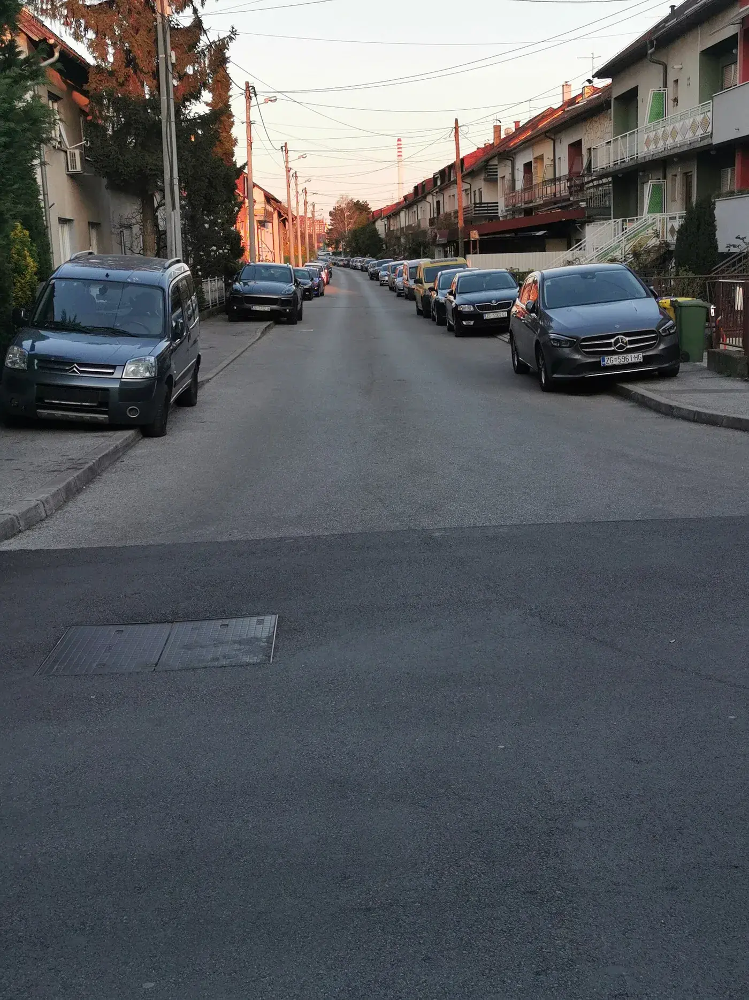
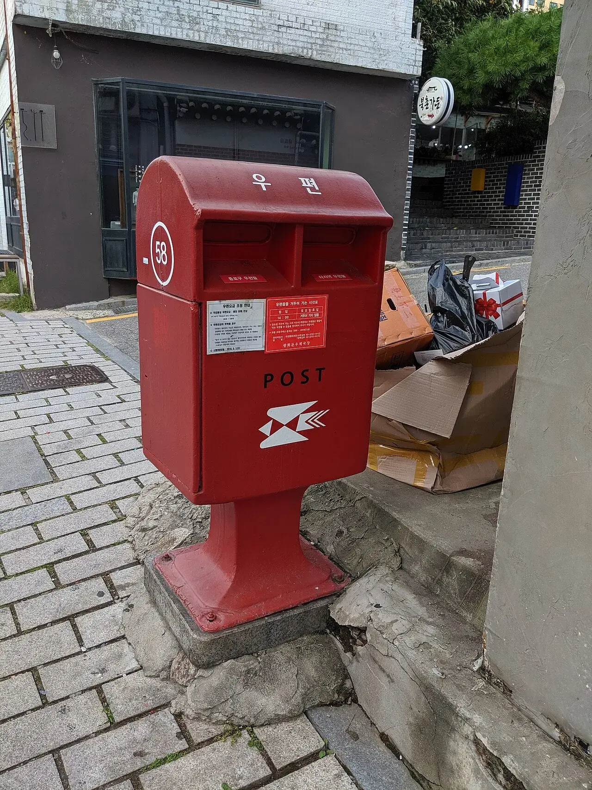
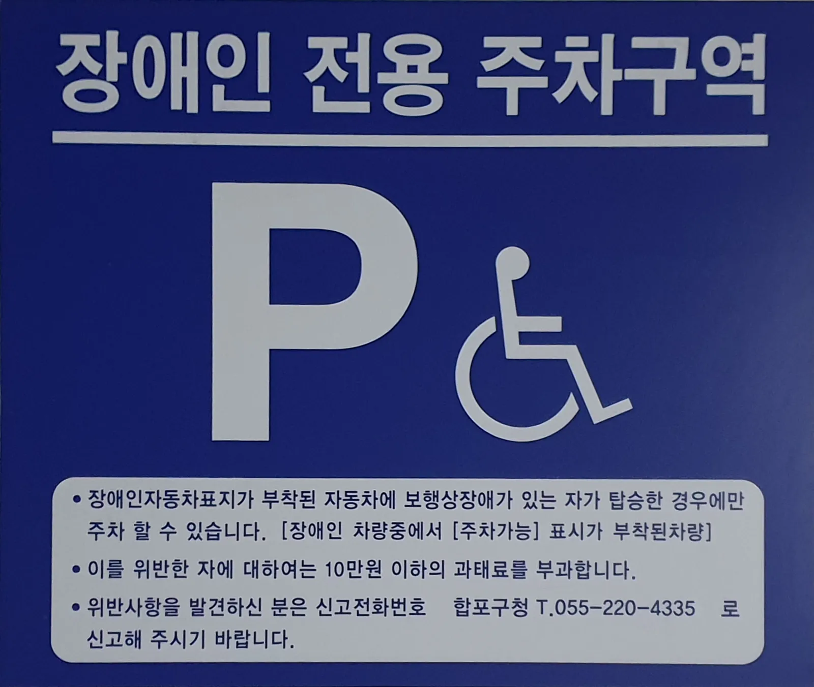
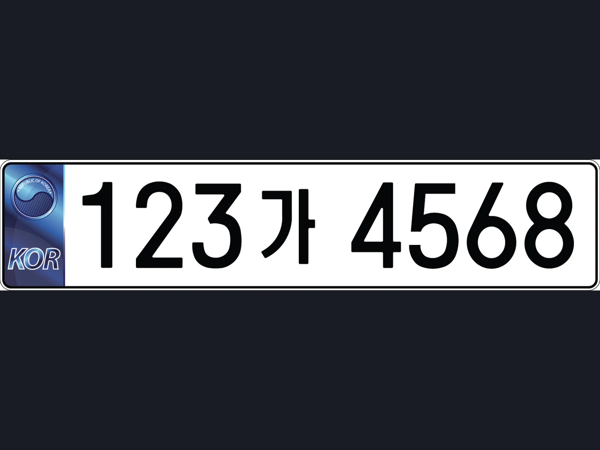
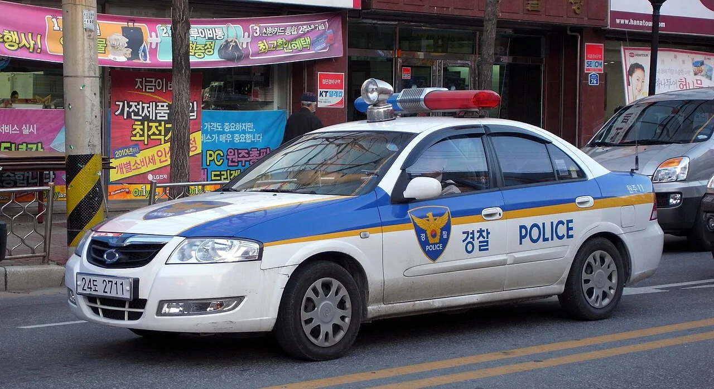
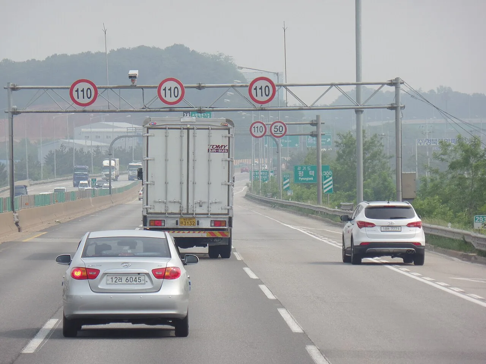
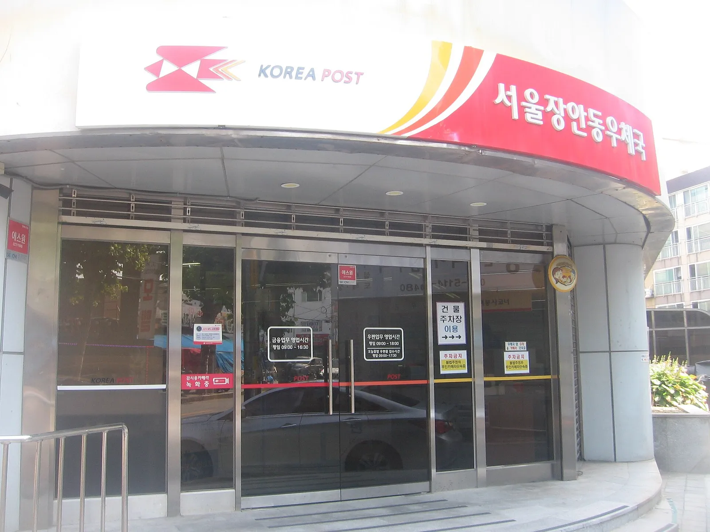
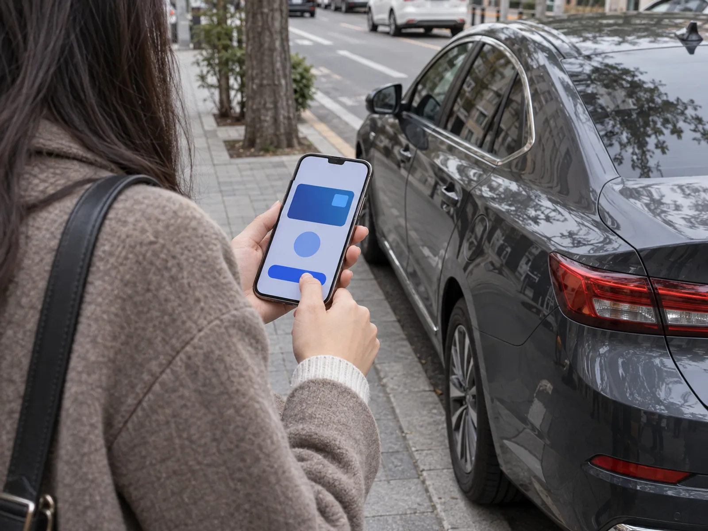

▲ 해외(크로아티아 자그레브) 주택가 사진으로 국내 사례와 무관한 자료사진이다. 주정차 과태료를 방치하면 체납으로 이어진다 ⓒ Mnalis, Wikimedia Commons (CC BY-SA 3.0)
"고지서는 못 받았는데, 번호판을 떼 간다고요?" 과태료는 이의신청이나 감경 얘기가 많지만, 정작 기한을 넘긴 뒤에 무슨 일이 어떤 순서로 벌어지는지는 잘 알려지지 않았다. 이 글은 이의신청 절차가 아니라 체납 이후 단계(가산금 → 독촉 → 번호판 영치 → 압류·공매)와 그 사이에서 쓸 수 있는 구제 제도를 정리한다. 가산금은 5만 원·10만 원을 예로 직접 계산했고, 법령 조문은 국가법령정보 공동활용 API(법제처 제공 XML)로 현행 원문을 직접 내려받아 대조했다(질서위반행위규제법 2026.10.2. 시행본, 시행령 2026.6.30. 시행본, 도로교통법 2026.7.1. 시행본, 도로교통법 시행령 별표 8). 먼저 인용 사이트(casenote)로 확인했던 내용 가운데 원문과 다른 곳은 없었고, 원문으로도 확인하지 못한 항목은 그대로 표시한다.
이의신청 자체는 교통 과태료·범칙금 이의신청 기사에서, 주정차 과태료의 20% 감경과 이의 절차는 주정차 과태료 이의신청 기사에서 다뤘다. 이 글은 두 기사에서 한 줄로 지나간 "안 내면 가산금이 붙는다" 뒤의 이야기다.
1. 기한을 넘기면 어떤 순서로 진행되나 — 5단계 지도
과태료 체납은 한 번에 번호판 영치로 가지 않는다. 확인한 법령과 경찰청 설명을 종합하면 아래 순서다. 숫자 조건은 근거가 있는 것만 적었고, 지자체·경찰서별 운영 시점은 확인하지 못했다.
| 단계 | 시점 | 무슨 일이 생기나 | 근거·비고 |
|---|---|---|---|
| ① 가산금 발생 | 납부기한 다음 날부터 | 체납액의 3% 가산 | 질서위반행위규제법 제24조 ① |
| ② 중가산금 | 매 1개월 경과마다 | 체납액의 1.2%씩 추가, 최대 60개월 | 제24조 ② (합계 최대 75%) |
| ③ 독촉·체납처분 | 이의 없이 가산금 미납 시 | 국세·지방세 체납처분의 예에 따라 징수(재산 압류 등) | 제24조 ③. 독촉장 발송 시점 규정은 확인하지 못함 |
| ④ 번호판 영치 | 자동차 관련 과태료 체납 60일 초과·30만 원 이상 | 자동차 등록번호판을 떼어 보관 | 제55조·시행령 제14조 제2·3항 원문(60일 초과, 가산금 포함 30만 원 이상, 영치 전 10일 내 납부 최후통지) |
| ⑤ 차량·예금 압류, 공매 | 체납 지속 시 | 자동차 압류, 예금 압류, 이후 환가(공매) | 체납처분의 예. 공매 착수 기준은 확인하지 못함 |

▲ 과태료 고지서는 통상 우편으로 온다. 납부기한과 이의 기한은 모두 이 고지서를 기준으로 흐른다 ⓒ Tobias Preuss, Wikimedia Commons (CC BY-SA 4.0)
📍 먼저 알아둘 것: 기한은 두 개다
과태료는 이의제기 기한(통지받은 날부터 60일, 법 제20조)과 고지서의 납부기한이 따로 있다. 이의도 하지 않고 가산금도 내지 않아야 ③ 체납처분 단계로 넘어간다(법 제24조 ③). 이의제기 방법은 이의신청 기사를 보면 된다.
체납 단계별 타임라인 — 5만 원과 30만 원이 각각 어디까지 가나
납부기한이 지난 뒤 시간이 흐르면 금액과 가능한 조치가 어떻게 달라지는지 두 가지 원금으로 겹쳐 봤다. 가정: ① 원금은 자동차 관련 과태료 1건, ② 가산금 = 원금×(3%+1.2%×경과 개월), ③ "체납발생일"은 납부기한 다음 날로 보고 월 단위 경과를 60일 근처에 대응(조문에 별도 정의를 확인하지 못해 단순화), ④ 원 미만은 반올림, ⑤ 이의 기한(통지받은 날부터 60일)과 징수유예 신청은 별개 트랙. 5만·30만 원 열은 node로 직접 계산했다.
| 납기 후 | 5만 원 체납 누적 | 30만 원 체납 누적 | 이 시점에 가능한 조치(원문 기준) |
|---|---|---|---|
| 다음 날 | 51,500원 | 309,000원 | 3% 가산금 발생. 아직 60일 전이라 영치 요건 미충족 |
| 1개월 | 52,100원 | 312,600원 | 중가산금 1회. 영치 요건 미충족(60일 미경과) |
| 약 2개월(60일 초과 시점 부근) | 52,700원 | 316,200원 | 30만 원 건은 기간·금액 요건을 모두 갖춤 → 영치 전 10일 내 납부 최후통지 후 영치 가능. 5만 원 건은 금액 미달 |
| 6개월 | 55,100원 | 330,600원 | 30만 원 건은 영치 대상 상태 지속. 5만 원 건도 법 제24조 ③에 따라 이의 없이 가산금까지 안 내면 체납처분(압류 등) 대상 |
| 12개월 | 58,700원 | 352,200원 | 징수유예등을 받았다면 유예 기간 중 가산금·체납처분 중단(법 제24조의3 ④) |
| 60개월 | 87,500원 | 525,000원 | 중가산금 부과 기간 상한(60개월). 이후에도 원금과 이미 붙은 가산금은 징수 대상 |
여기서 읽을 점은 두 가지다. 5만 원짜리 한 건은 5년을 끌어도 87,500원이라 영치 문턱(30만 원)에 닿지 못하지만, 체납처분 대상에서 빠지는 것은 아니다(법 제24조 ③). 반대로 30만 원 건은 가산금이 처음부터 붙어 있어 60일만 넘기면 곧바로 영치 요건을 채운다. 압류 착수 시점은 조문에 정해져 있지 않아 확인하지 못했다.
2. 가산금은 얼마나 불어나나 — 5만 원·10만 원 직접 계산
법 제24조 ①은 납부기한을 넘기면 체납된 과태료의 100분의 3을 가산금으로 징수한다고 정하고, ②는 이후 매 1개월이 경과할 때마다 체납된 과태료의 1천분의 12를 중가산금으로 더하되 그 기간을 60개월을 넘지 못하게 한다. 이를 계산식으로 쓰면 아래와 같다.
🧮 계산식과 가정
가산금 = 체납액 × (3% + 1.2% × N) (N = 납부기한 경과 개월 수, 0~60). 가정: ① 체납액은 가산금이 붙기 전 원래 과태료 금액, ② 중가산금은 가산금이 아니라 원금에 곱하는 단리(조문의 "체납된 과태료의 1천분의 12" 문구 기준), ③ 원 미만 처리는 계산하지 않음(실제 처리 방식은 확인하지 못함), ④ 감경·징수유예 없음.
| 체납 기간 | 가산 비율 | 5만 원 가산금 | 5만 원 총액 | 10만 원 가산금 | 10만 원 총액 |
|---|---|---|---|---|---|
| 납기 직후(0개월) | 3% | 1,500원 | 51,500원 | 3,000원 | 103,000원 |
| 1개월 | 4.2% | 2,100원 | 52,100원 | 4,200원 | 104,200원 |
| 3개월 | 6.6% | 3,300원 | 53,300원 | 6,600원 | 106,600원 |
| 6개월 | 10.2% | 5,100원 | 55,100원 | 10,200원 | 110,200원 |
| 12개월 | 17.4% | 8,700원 | 58,700원 | 17,400원 | 117,400원 |
| 24개월 | 31.8% | 15,900원 | 65,900원 | 31,800원 | 131,800원 |
| 36개월 | 46.2% | 23,100원 | 73,100원 | 46,200원 | 146,200원 |
| 60개월 | 75% | 37,500원 | 87,500원 | 75,000원 | 175,000원 |
핵심은 월 가산이 단리라서 시간이 지날수록 선형으로 늘지만 상한이 있다는 점이다. 5만 원을 5년(60개월) 방치하면 3만 7,500원이 더 붙어 총 8만 7,500원이 된다. 반대로 고지서를 받고 사전통지 기간에 자진납부해 최대 20% 감경을 받으면 5만 원은 4만 원이다(법 제18조: 의견제출 기한 내 자진납부 시 감경할 수 있고, 시행령 제5조: 감경액은 부과될 과태료의 100분의 20 범위 이내, 실제 감경 여부·비율은 행정청 판단). 같은 과태료가 4만 원이 될 수도, 8만 7,500원이 될 수도 있다.
▲ 고지서를 펼쳐 놓고 가산금을 직접 계산해 보는 장면(설명용 AI 생성 예시 이미지) ⓒ CarPrism (AI 생성 이미지)
원금별 가산금 민감도 — 한 달 늦을 때마다 얼마씩 붙나
같은 수식을 원금만 바꿔 돌렸다. 앞 표의 5만·10만 원에 30만·50만 원을 더했고, "1개월 추가분"은 중가산금 1회(원금×1.2%)다. 가정은 위 계산식과 같고, 원 미만은 반올림했다.
| 원금 | 1개월 추가분 | 6개월 가산금 | 12개월 가산금 | 24개월 가산금 | 60개월 가산금(상한) |
|---|---|---|---|---|---|
| 50,000원 | 600원 | 5,100원 | 8,700원 | 15,900원 | 37,500원 |
| 100,000원 | 1,200원 | 10,200원 | 17,400원 | 31,800원 | 75,000원 |
| 300,000원 | 3,600원 | 30,600원 | 52,200원 | 95,400원 | 225,000원 |
| 500,000원 | 6,000원 | 51,000원 | 87,000원 | 159,000원 | 375,000원 |
원금이 6배(5만→30만 원)가 되면 가산금도 정확히 6배다. 비율이 고정이라 금액이 클수록 "한 달 미루기"의 값이 커진다(50만 원이면 월 6,000원). 12개월이 지난 시점의 가산금은 원금의 17.4%로, 이후 매달 1.2%p씩 선형으로 늘어 60개월에 75%에서 멈춘다. 다만 이 상한은 가산금에만 걸린 것이어서 원금과 이미 붙은 가산금은 계속 징수 대상이다.

▲ 장애인 전용 주차구역 표지. 주차 위반 과태료도 체납되면 같은 가산금 구조를 따른다. 표지에 적힌 과태료 금액 문구는 촬영 시점(2020년) 기준이라 현행 금액은 별도 확인이 필요하다 ⓒ Jyoo1011, Wikimedia Commons (CC BY-SA 4.0)
✅ 확인하지 못한 부분
지방세외수입법상 일반 세외수입의 가산금·중가산금 비율은 이 글에서 확인하지 못했다. 위 표는 질서위반행위규제법이 적용되는 교통 과태료 기준이다. 영치 요건의 "30만 원 이상"에 가산금이 들어가는지는 시행령 제14조 제2항 제2호 원문(가산금·중가산금 포함)으로 확인해 3장에 반영했다. 원 미만 단수 처리 방식은 확인하지 못했다.
3. 번호판 영치 — 30만 원·60일, 그리고 해제
법 제55조는 행정청이 자동차 관련 과태료를 내지 않은 사람의 체납과 관계된 자동차의 등록번호판을 영치할 수 있다고 정한다. 영치 요건은 경찰청이 2026년 4월과 7월 보도에서 같은 문구로 설명했다: 자동차 관련 과태료를 30만 원 이상, 60일 넘게 체납. 시행령 제14조 제2항 원문은 아래 세 요건을 모두 충족할 때로 한정한다. ① 자동차 관련 과태료를 체납발생일부터 60일을 넘어 체납, ② 체납된 자동차 관련 과태료(법 제24조의 가산금·중가산금 포함) 합계액이 30만 원 이상, ③ 과태료와 관계된 자동차가 체납자 본인 소유. 보도에 따라 "초과"와 "이상" 표현이 섞여 있으나 원문 문구는 "넘어"다.
| 항목 | 내용 | 확인 수준 |
|---|---|---|
| 대상 과태료 | 책임보험 미가입, 정기검사 미필·지연, 주정차 등 자동차 관련 과태료 | 시행령 제14조 제1항이 자동차손해배상 보장법 제48조, 도로교통법 제160조, 자동차관리법 제84조의 특정 호 과태료로 한정(호별 위반행위 대응표는 대조하지 못함). 구청 안내(강동구·구리시)와 일치 |
| 금액·기간 | 합계 30만 원 이상(가산금·중가산금 포함), 체납발생일부터 60일 초과, 체납자 본인 소유 차량(체납발생일의 기산 기준은 제14조 안에서 별도 정의를 확인하지 못함) | 시행령 제14조 제2항 원문 확인, 경찰청 보도와 일치 |
| 사전 통지 | 영치 전 "10일 이내에 납부하지 않으면 즉시 영치한다"는 뜻을 서면(동의 시 전자문서)으로 미리 통지. 통지서에는 성명·주소·체납액·적용 법령·차량 등록번호 등을 적고, 영치 후에는 영치증을 교부(수령 불가·거부 시 예외) | 시행령 제14조 제3·4·5항 원문 확인 |
| 반환 | 체납 과태료를 납부하면 즉시 내줌(법 제55조 제3항). 시행령상 가산금·중가산금 포함 납부증명서를 확인하되, 행정정보 공동이용으로 납부가 확인되면 생략 가능(제14조 제7항) | 법 제55조·시행령 제14조 원문 확인 |
| 생계용 일시 반환 | 직접적인 생계유지 목적으로 쓰는 차량이라 영치하면 생계가 곤란하다고 인정될 때 번호판을 내주고 영치를 일시 해제할 수 있음. 다만 그 밖의 다른 과태료를 체납 중인 당사자는 제외. 일시 해제의 기간·요건·절차는 대통령령 위임이며 시행령 제14조 안에서는 찾지 못함 | 법 제55조 제4·5항 원문 확인, 세부 기준은 확인하지 못함 |
| 해제 절차 | 신분증 지참, 구청 방문, 완납, 필요 시 검사·의무보험 이행 후 수령 | 강동구 안내 |

▲ 번호판 영치는 등록번호판을 떼어 보관하는 조치다. 이미지는 샘플 번호판 ⓒ 대한민국 정부(문화체육관광부) · Wikimedia Commons (Public Domain)
영치된 번호판을 달지 못한 채 운행하면 번호판 없이 운전하는 상태가 된다. 정기검사나 책임보험 과태료 체납이 영치 사유라면 납부만으로 끝나지 않고 검사·보험도 해결해야 번호판을 돌려받는다는 안내도 있다. 검사 과태료는 자동차 정기검사 과태료 기사에서 따로 다뤘다.
영치 문턱 민감도 — 원금이 얼마부터 30만 원을 넘나
시행령 제14조 제2항 제2호가 가산금·중가산금을 합계액에 포함하므로, 원금이 30만 원에 못 미쳐도 시간이 지나면 문턱을 넘을 수 있다. 합계 30만 원 이상이 되는 최소 원금은 300,000÷(1.03+0.012×N)이고, 5만 원짜리 건이 여러 개일 때 필요한 건수는 올림으로 구했다. 가정: 모든 건의 경과 개월이 같고(실제는 건마다 다름), 여러 건 합산은 "체납된 자동차 관련 과태료의 합계액"이라는 원문 표현에 근거한 해석이며, 60일 초과 요건은 별도로 충족해야 한다.
| 납기 후 경과 | 원금 대비 배율 | 합계 30만 원 이상이 되는 최소 원금 | 5만 원짜리로 채우려면(건수) |
|---|---|---|---|
| 납기 직후(0개월) | 1.030배 | 291,263원 | 6건 |
| 1개월 | 1.042배 | 287,908원 | 6건 |
| 2개월 | 1.054배 | 284,630원 | 6건 |
| 6개월 | 1.102배 | 272,233원 | 6건 |
| 12개월 | 1.174배 | 255,537원 | 6건 |
| 24개월 | 1.318배 | 227,618원 | 5건 |
| 60개월 | 1.750배 | 171,429원 | 4건 |
예를 들어 원금 29만 원인 건은 납기 직후엔 298,700원이라 문턱 아래지만, 2개월 경과 시점엔 305,660원으로 넘는다. 30만 원 문턱을 앞두고 있다면 원금만 보고 안심하면 안 된다는 뜻이다. 다만 서로 다른 과태료 사이의 합산이 실무에서 어떻게 적용되는지는 확인하지 못했다.
4. 압류에서 공매까지 — 경찰청 실적으로 본 강제징수 규모
영치는 압류의 전 단계가 아니라 병행되는 수단이다. 경찰청이 공개한 2026년 실적을 보면 영치만 있는 게 아니다.
| 구분 | 1~4월 특별단속 | 1~6월 상반기 |
|---|---|---|
| 번호판 영치 | 7만 2,676대, 317억 8천만 원 | 450억 원(97% 증가) |
| 차량 압류 | 585억 1,600만 원 | 833억 원(28% 증가) |
| 예금 압류 | 112억 4천만 원 | 185억 원(18% 증가) |
| 합계 | 1,016억 원(전년 682억 원, 49% 증가) | 1,471억 원(전년 대비 42% 증가, 기타 포함 보도 총액) |
1~4월 수치도 영치 317.8억+차량 압류 585.16억+예금 압류 112.4억=1,015.36억 원으로 보도 총액 1,016억 원과 약 0.6억 원 차이가 나는데, 이는 보도 반올림 차이로 보인다. 상반기 세 항목을 더하면 450+833+185=1,468억 원으로 보도 총액 1,471억 원과 3억 원 차이가 난다. 기타 항목 포함으로 보이나 구성은 확인하지 못했다. 같은 보도에서 누적 체납액은 2025년 12월 말 1조 1,447억 원에서 2026년 6월 말 1조 1,013억 원으로 434억 원(3.8%) 줄었다. 경찰청은 체납관리관 54명을 16개 시도경찰청과 35개 경찰서에 배치했고, 연말까지 46명을 추가 선발해 100명 규모로 늘릴 계획이다. 이 숫자는 "체납이 실제로 쫓는다"는 신호이지, 개인이 어느 시점에 압류되는지의 기준은 아니다.

▲ 경찰청은 2026년 체납관리관을 시도경찰청·경찰서에 배치해 체납 과태료 징수를 강화했다. 사진은 국내 경찰 순찰차(자료사진) ⓒ Dalgial, Wikimedia Commons (CC BY-SA 3.0)
자동차가 압류되면 자동차 등록원부에 압류가 올라가 매매·이전이 막히는 식으로 불편이 이어진다. 압류 이후 공매로 넘어가는 구체 요건(체납액 기준, 시점)은 확인하지 못했다. 압류 여부는 자동차 저당·압류 확인 기사의 방법으로 원부에서 직접 볼 수 있다.
▲ 경찰청 청사 일대(파일 설명 기준, 2006년 촬영). 체납 과태료 강제징수 실적은 경찰청이 공개했다 ⓒ Gohsuke Takama, Wikimedia Commons (CC BY 2.0)
5. 범칙금과 과태료는 체납 후 길이 다르다
범칙금은 운전자에게, 과태료는 (자동차 관련이라면) 차량 소유자에게 부과되는 것이 기본 구분이다. 체납 이후 구조가 완전히 갈린다. 아래 범칙금 예시는 6만 원 가정(도로교통법 시행령 별표 8 "신호·지시 위반" 승용자동차등 범칙금 6만 원, 2025.6.2. 개정 별표 원문으로 확인)이다.
| 구분 | 범칙금 | 과태료 |
|---|---|---|
| 부과 대상 | 운전자(현장 통고) | 차량 소유자(무인 단속 등) |
| 벌점 | 부과됨 | 원칙적으로 없음 |
| 최초 납부기간 | 통고받은 날부터 10일(천재지변 등 부득이한 사유는 사유가 없어진 날부터 5일 이내) | 고지서 납부기한 |
| 기한 후 | 다음 날부터 20일 이내 20% 가산해 납부 | 3% 가산금 + 월 1.2% 중가산금(최대 75%) |
| 그다음 | 즉결심판 청구. 청구 전 또는 선고 전까지 통고받은 범칙금액+50%를 내고 증빙하면 청구 취소·처벌 면함(제165조) | 체납처분(압류 등), 영치 |
| 6만 원 예시 | 7만 2,000원 → 즉결심판 회피 시 9만 원 | 5년 체납 시 최대 10만 5,000원(60,000×1.75) |
범칙금 6만 원 계산식은 20% 가산 시 6만×1.2=7만 2,000원, 즉결심판 단계 +50% 시 6만×1.5=9만 원이다. 한편 과태료를 체납한 차량이 단속에서 운전자와 함께 확인되면 과태료가 범칙금으로 전환되기도 한다. 경찰청 1~4월 특별단속에서 409건이 범칙금으로 전환돼 면허 정지 7건, 면허 취소 4건으로 이어졌다. 즉결심판 이후 벌금 미납 시 처리(노역장 유치 등)는 이 글에서 확인하지 못했다.

▲ 무인카메라 단속은 대개 과태료로 처리된다. 운전자를 특정하지 않으므로 차량 소유자에게 고지서가 간다 ⓒ Jhcbs1019, Wikimedia Commons (CC BY-SA 4.0)
6. 구제 수단 — 감경·분할납부·징수유예·영치 일시반환
돈이 없어서 못 내는 경우와 몰라서 못 낸 경우를 구분해 보자. 체납 이후에도 쓸 수 있는 수단이 있다.
| 수단 | 시점 | 요건·효과 | 근거 |
|---|---|---|---|
| 자진납부 감경 | 사전통지 의견제출 기한 내 | 과태료의 20% 범위 이내에서 감경할 수 있음(시행령 제5조), 납부 시 부과·징수 절차 종료 | 법 제18조, 시행령 제5조 |
| 이의제기 | 통지받은 날부터 60일 | 이의 시 법원 절차로 이송 | 법 제20조, 이의신청 기사 |
| 징수유예·분할납부 | 납부 곤란 시 신청 | 법 제24조의3 ①의 9개 호(기초생활수급자, 차상위 일부, 장애인, 부양자 없는 사람, 재난피해, 1개월 이상 장기치료, 개인회생, 실업급여 수급 등)와 시행령 부득이 사유(도난 등 현저한 손실, 사업 위기, 일시 납부 시 생계·자금 곤란)에 해당해 납부가 곤란하면 1년 범위에서 분할납부·기일 연기. 시행령은 결정 다음 날부터 9개월 이내(연장 1회 3개월). 유예 중에는 가산금·중가산금·체납처분(교부청구 제외) 불가 | 법 제24조의3, 시행령 제7조의2 |
| 영치 일시 반환 | 영치 후 | 직접적인 생계유지 목적 사용으로 영치 시 생계 곤란이 인정되면 가능. 다른 과태료를 체납 중이면 제외 | 법 제55조 ④ |
▲ 행정기관 상담 장면(설명용 AI 생성 예시 이미지). 분할납부·징수유예는 관할 행정청에 신청해 상담받는 방식이다 ⓒ CarPrism (AI 생성 이미지)
내 상황엔 어떤 제도가 맞나 — 구제 제도 선택 판정표
원금 10만 원 한 건을 예로, 상황별로 먼저 볼 제도와 금액 효과를 정리했다. 금액은 앞의 계산식(10만 원×(3%+1.2%×N))과 시행령 제5조 감경 상한 20%를 쓴 카프리즘 계산이며, 감경은 행정청 재량이라 최대치다.
| 내 상황 | 먼저 볼 제도 | 핵심 조건·효과 | 10만 원 기준 금액 |
|---|---|---|---|
| 고지서를 받았고 의견제출 기한 안 | 자진납부 감경 | 20% 범위 이내 감경, 납부하면 절차 종료(법 제18조, 시행령 제5조) | 최대 80,000원 (정상 납부 시 100,000원) |
| 부과가 부당하다고 판단, 통지 후 60일 안 | 이의제기 | 서면 이의 시 부과처분이 효력을 잃고 법원 절차로 넘어감(법 제20조) | 결과에 따라 달라짐(이의신청 기사) |
| 기한은 지났고 법정 사유에 해당(수급자·장애인·재난·장기치료 등) | 징수유예·분할납부 | 신청일부터 효력, 유예 중 가산금·체납처분 불가. 지정 기한을 어기면 취소·일시 징수(법 제24조의3) | 6개월 방치 시 110,200원, 유예 중엔 추가 가산 없음 |
| 법정 사유엔 없지만 일시 납부가 곤란 | 시행령 부득이 사유 신청 | "일시 납부 시 생계·자금 사정 현저한 어려움" 등을 소명(시행령 제7조의2 ②). 인정 여부는 행정청 판단 | 인정 안 되면 12개월 방치 시 117,400원 |
| 이미 영치됐고 차량이 생계 수단 | 영치 일시 해제 | 생계 곤란이 인정되면 번호판을 내주고 일시 해제. 다른 과태료 체납이 있으면 제외(법 제55조 ④) | 체납액 자체는 그대로 남음 |
| 그냥 잊고 있었다 | 즉시 완납 | 가산금은 매월 원금의 1.2%씩 단리로 늘어 빨리 낼수록 유리. 영치됐다면 납부 후 즉시 번호판 반환(법 제55조 ③) | 1개월 늦을 때마다 +1,200원 |
한 가지 주의할 점은 징수유예가 가산금을 깎아 주는 제도가 아니라 더 붙지 않게 멈추는 제도라는 점이다. 유예 전에 이미 붙은 가산금이 어떻게 처리되는지, 일부만 먼저 납부했을 때 가산금에 어떤 순서로 충당되는지는 조문에서 확인하지 못했다.
📍 신청 기한과 통지 기간
시행령 제7조의3 원문에 따르면 신청서에 사유를 증명하는 서류를 붙여 행정청에 내고, 행정청은 특별한 사정이 없으면 신청일부터 20일 이내에 결정·통지하며 결정 효력은 신청일부터 생긴다. 사유가 있으면 행정청이 직권으로 결정할 수도 있다. 법 제24조의3 ③⑤에 따라 담보 제공을 요구받을 수 있고, 지정 기한까지 내지 않으면 유예가 취소돼 한꺼번에 징수될 수 있으며, 시행령 제7조의4 ③에 따라 취소되면 원칙적으로 다시 유예받지 못한다. 분할 횟수·금액은 시행령 제7조의2 ③이 "사유를 고려해 행정청이 정한다"고만 해 구체 산정 기준은 확인하지 못했다. 제출 서류는 부과 기관마다 다를 수 있어 부과 기관에 직접 문의하는 것이 안전하다.
7. 어디서 조회하고 어디서 내나 — 이파인·위택스·모바일
납부 채널은 부과 주체에 따라 갈린다. 경찰이 부과한 과태료·범칙금은 경찰청 교통범칙금 시스템 이파인(efine.go.kr), 지자체가 부과한 주정차 과태료 등은 지방세외수입 납부가 가능한 위택스(wetax.go.kr) 등을 쓴다. 이파인 사이트 접속 테스트는 이 글 작성 중 리다이렉트로 완료하지 못해 화면 구성과 모바일 앱 명칭은 확인하지 못했다.
| 채널 | 용도 | 확인 수준 |
|---|---|---|
| 이파인(경찰청) | 경찰 부과 과태료·범칙금 조회·납부, 이의제기 | 이의신청 기사에서 확인한 이용 방식, 이번에 직접 접속은 실패 |
| 위택스(행안부) | 지자체 부과 과태료 등 지방세외수입 납부 | 2차 자료 |
| 국고은행·우체국 등(범칙금) | 경찰청장이 지정하는 국고은행·지점·대리점·우체국, 제주는 지사가 지정한 금융회사 등에 범칙금 납부(도로교통법 제164조 ①) | 법 원문 확인, 과태료 납부처는 고지서 안내를 따를 것 |
| 고지서 가상계좌·금융기관 | 고지서에 적힌 계좌·창구 납부 | 일반 안내 |
| 모바일 납부 | 스마트폰 인증·간편결제 이용 | 앱별 가능 여부는 확인하지 못함 |

▲ 우체국 출입구(서울 장안동 우체국, 2025년 촬영). 도로교통법 제164조 제1항은 범칙금 납부처에 우체국을 포함한다 ⓒ Zhou Guanhuai, Wikimedia Commons (CC0)

▲ 모바일로 조회·납부하는 장면(설명용 AI 생성 예시 이미지). 화면 속 내용은 가상이다 ⓒ CarPrism (AI 생성 이미지)
8. 이사 후 고지서를 못 받았다면
체납의 상당수는 "못 받았다"에서 시작한다. 자동차 등록 주소가 옛 주소로 남아 있으면 고지서가 엉뚱한 곳으로 간다. 검색으로 확인한 안내에 따르면 개인 소유 차량은 전입신고를 하면 주소 변경이 자동 반영되는 경우가 많다(2차 자료). 반면 자동 연동이 안 되는 경우와 변경등록 기한·과태료는 2차 자료만 있어 확인하지 못했다.
- 이사했다면 전입신고 후 자동차 등록 주소가 바뀌었는지 자동차 등록원부로 확인한다
- 고지서를 못 받았다는 사실만으로 납부 의무가 없어진다고 단정할 수 없다. 공시송달 등 송달 방식의 조문은 확인하지 못했다
- 이파인·위택스 조회로 체납 건이 있는지 직접 확인한다. 책임보험·정기검사 과태료도 영치 대상이다
- 영치 예고 통지가 왔다면 기한 안에 부과 기관에 연락한다
▲ 경찰이 부과한 체납 과태료는 관할 경찰서로 문의할 수 있다 ⓒ hyolee2, Wikimedia Commons (CC BY-SA 3.0)
주정차·단속 방식 자체는 스마트폰 주정차 신고 기사에서, 하이패스 미납 통행료는 하이패스 미납 확인 기사에서 따로 확인할 수 있다.
✅ 체납이 걱정될 때의 우선순위
1. 이파인·위택스에서 미납 건 조회(최소 분기 1회)
2. 이사·번호 변경 후 주소 확인(고지서 수령 경로)
3. 사전통지 기간이면 20% 감경 자진납부가 가장 싸다
4. 어렵다면 영치 전 징수유예·분할납부 상담(법 제24조의3)
5. 이의가 있다면 통지일부터 60일 안에 이의제기
9. 요약
과태료는 안 낼수록 비싸지고, 안 낼수록 불편해진다. 기한을 넘기면 체납액의 3%, 이후 월 1.2%(최대 60개월)가 붙어 최대 75%까지 불어난다. 5만 원이면 5년 뒤 8만 7,500원, 10만 원이면 17만 5,000원이다(카프리즘 계산, 원금 단리 가정).
자동차 관련 과태료 30만 원 이상을 60일 넘게 체납하면 번호판이 영치될 수 있고, 2026년 경찰청은 상반기 1,471억 원을 강제징수했다. 범칙금은 10일→20일(20% 가산)→즉결심판 순서로 과태료와 다르다.
사정이 어려우면 징수유예·분할납부(법 제24조의3)를 영치 전에 상담한다. 공매 착수 기준, 지방세외수입법 가산금, 공시송달 조문, 이파인 모바일 앱 명칭은 확인하지 못했다.